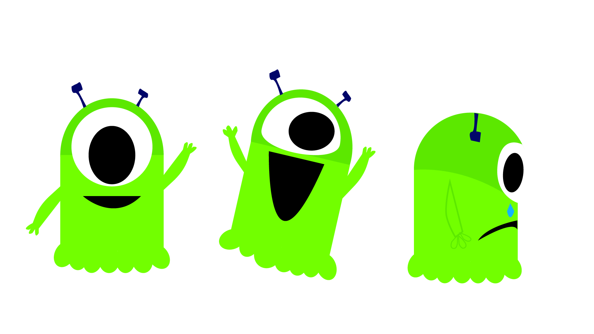
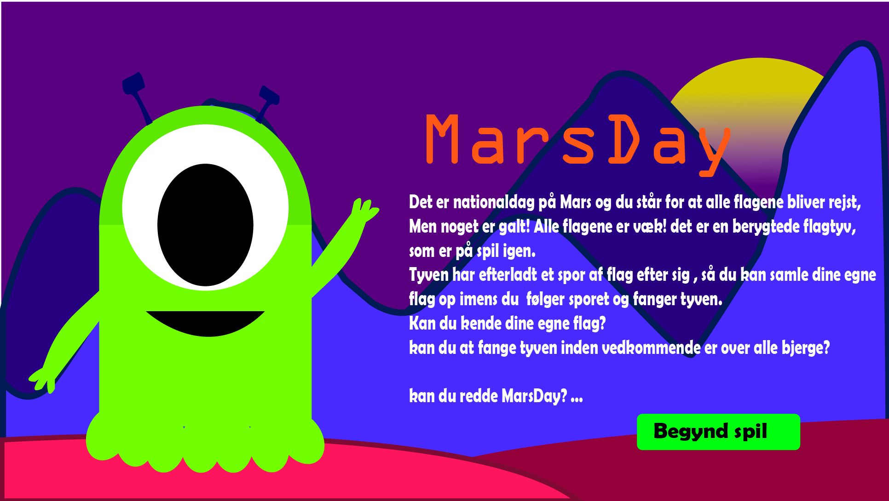

På temaet "Grundlæggende Animation" lærte vi om JavaScript og mere kodning af Html og CSS. Jeg startede ud med desk research for at finde ud af hvordan mit spil skulle se ud. Derfter lavede jeg en metode, som hedder krydsmetoden. Den lærte vi ved animations temaet. Den går i alt sin simpelhed ud på, at du har en liste med forskellige ord, som er delt op i verber, settings og Ting/elementer/figur. Man laver så 10 ideer ud fra ord, som man helt tilfældigt tager frem. Jeg fandt ideen om en marsmand der skulle fange flag spændene, så det var den jeg gik med. Efter jeg havde valgt min ide lavede jeg en paper prototype. Her kunne man også vælge at lave en hi eller lowfi på XD, men jeg gik med paper prototype fordi den er helt forenklet og meget hurtigt at lave og man kan rentegne den i illustrator. Af andre metoder til man kunne bruge til den kreative proses var "Crazy 8". Nu nå jeg har designet på plads, så skal jeg have styr på selve spillet. Hvordan skal det forgå?. Dette fandt jeg ud af med et aktivitetsdiagram, som er en oversigt over hvordan spillet skal udfolde sig og hvad der skal ske, hvis du foreksempel vinder. Vi lavede også et State Machine Diagram, som viser hvad der sker bag spillet. Foreksempel hvis du trykker på et flag, hvad sker der så med de forskellige klasse du har på flaget. Efter spillet var færdigt skulle vi kode en hjemmeside til spillet med UI elementer, figurelementer, spilleskærme, beskrivelse af ideen, dokumentation og selve spillet.

